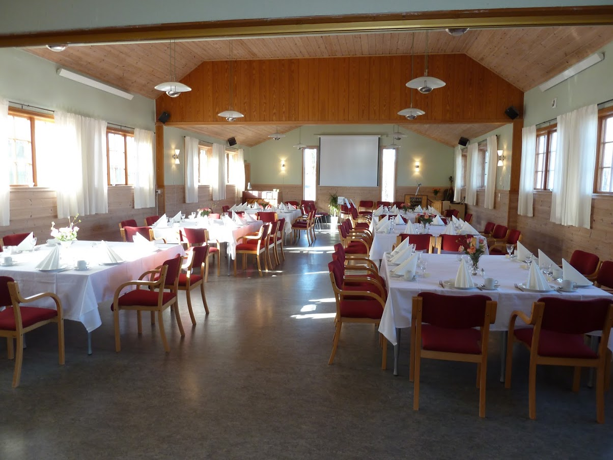

1 / 6

Ask Menighetshus
2 / 6

Utenfor
3 / 6

Kjøkkenet
4 / 6

Salen
5 / 6

6 / 6

Ask menighetshus er blitt rehabilitert flere ganger, og resultatet er blitt et trivelig og tjenlig hus.
Kjøkkenet ble nytt i 2014 og må sies å være et «storkjøkken» i passelig format for ca. 100 gjester
som salen rommer. Men rundt 60 gjerster er optimalt. Se bildene under. Huset har alt av
nødvendig dekketøy. Duker kan leies.
Vi har et godt høytaleranlegg og ypperlig projektor. Tar en
med seg en bærbar pc, så er det adaptere for enkel påkobling. Toalettfasilitetene er nye, også for
funksjonshemmede. Huset blir mye brukt til minnesamvær, dåps- og konfirmasjons-middager.
Bryllup har det vært flere ganger. Også runde dager feires i huset. Vi understreker at det ikke er
tillatt med alkoholservering.
Ta gjerne kontakt for omvisning, pris og bestilling:
Øyvind Fluge, 98817422